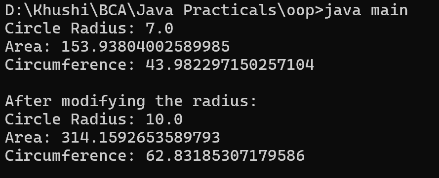

4. Write a Java program to create a class called "Circle" with a radius attribute. You can access and modify this attribute. Calculate the area and circumference of the circle.
class main {
public static void main(String[] args) {
Circle circle = new Circle(7.0);
System.out.println("Circle Radius: " + circle.getRadius());
System.out.println("Area: " + circle.calculateArea());
System.out.println("Circumference: " + circle.calculateCircumference());
circle.setRadius(10.0);
System.out.println("\nAfter modifying the radius:");
System.out.println("Circle Radius: " + circle.getRadius());
System.out.println("Area: " + circle.calculateArea());
System.out.println("Circumference: " + circle.calculateCircumference());
}
}
class Circle {
private double radius;
public Circle(double radius) {
this.radius = radius;
}
public double getRadius() {
return radius;
}
public void setRadius(double radius) {
this.radius = radius;
}
public double calculateArea() {
return Math.PI * radius * radius;
}
public double calculateCircumference() {
return 2 * Math.PI * radius;
}
}
